ECLIPSE
Volume 1 · Part 5 · The First Night
Prologue
Last Light
Evening · Wandile’s bedroom
The last of the daylight slides across Wandile’s desk and gives up somewhere near the keyboard. University notes lie in tidy stacks beside his laptop, the kind of tidiness that only exists on the evening before things get messy.
His phone buzzes. The group chat is already awake.
Ethan has written: “Café tomorrow? I’m starving already.”
Charlotte follows with a polite reminder about an assignment, and she is not naming names, but one of those names is Ethan.
Olivia sends a single laughing emoji, which says everything that needs saying.
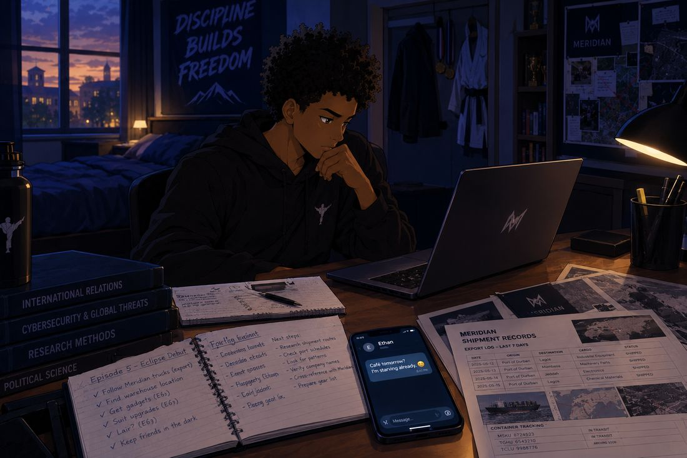
Wandile smiles and types something short and easy in reply. Then he writes the last line of his coursework, saves the document, and closes it. His ordinary life is still the first thing on his schedule. It always has been.
On the far corner of the desk sits a different pile: printed shipment records, a map, and a highlighter that has seen things. He has spent days with these pages, and one detail keeps tugging at him. A set of Meridian deliveries leaves the same distribution area late at night, at nearly the same hour, always heading the same way. The paperwork runs through Orion Logistics, the same name he pinned to his board with red thread.
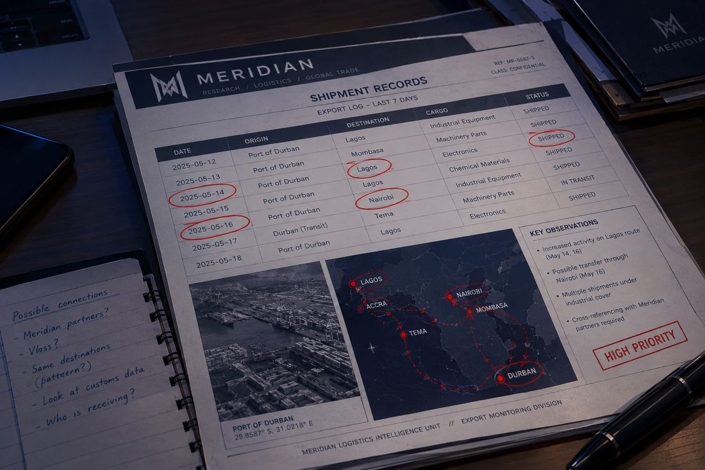
He lines up the dates and the locations. He can’t prove what is inside those trucks. But he can find out where one of them goes.
“I just need to see where it ends up,” he mutters.
Then he pauses. This isn’t an assignment. It isn’t a website he can close if something goes wrong. He knows that, and for a moment he lets himself know it properly.
Curiosity, as usual, wins the argument.
Chapter 1
The First Suit
Wandile opens his wardrobe. Behind the hoodies, and the one shirt he owns for formal occasions, hangs something that fits neither category.
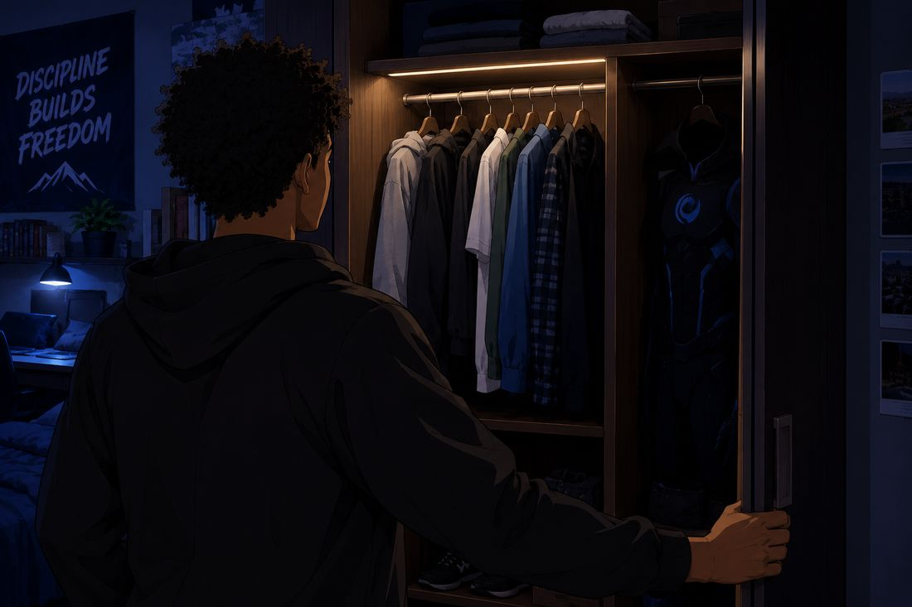
It is a black suit with deep-blue accents, built from sketches he drew at midnight and inspired by the logo he has carried around for years. It is sleek and practical, not armoured like a tank. It looks like something a person could run in, which is exactly the point.
He pulls on the protective layers, checks the fit of the gloves, and lifts the mask. Blue light gathers behind the eye slits and runs across the suit in a restrained pattern, like light caught in a cable.
The gear on the desk is not impressive. A phone. A compact flashlight. A small camera. A basic earpiece. No advanced weapons. No custom vehicle. No secret underground base. He doesn’t even have a secret above-ground base. He has a bedroom.
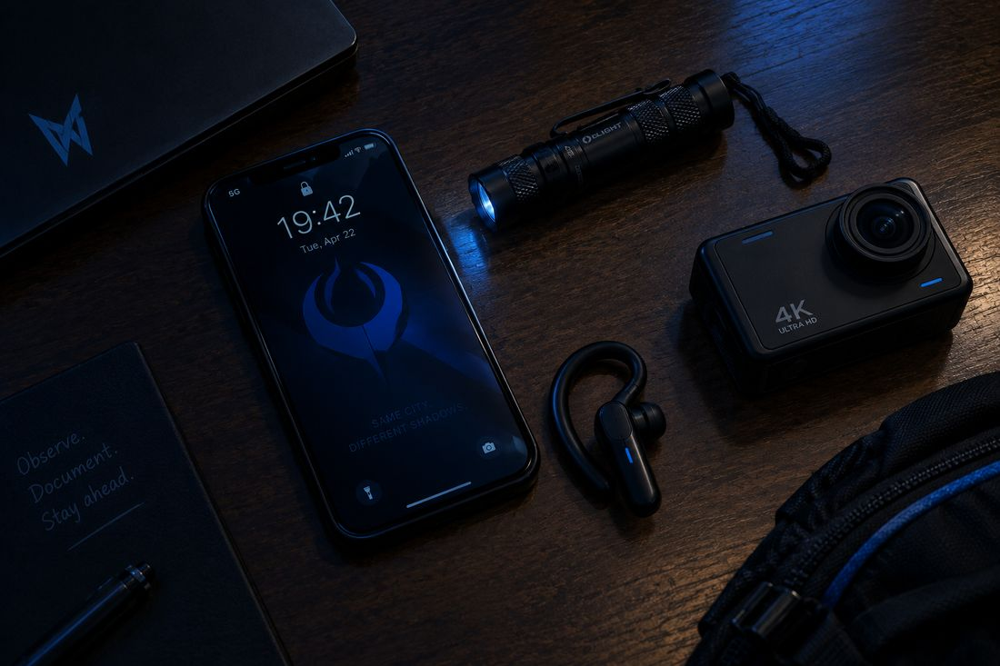
It is, at least, a very good flashlight.
He tests the mask by turning his head left and right, watching his reflection in the mirror. Months ago he stuck a checklist beside that mirror: Study. Build. Travel. Eclipse. He always thought of that last word as a someday. It seems someday has a schedule.
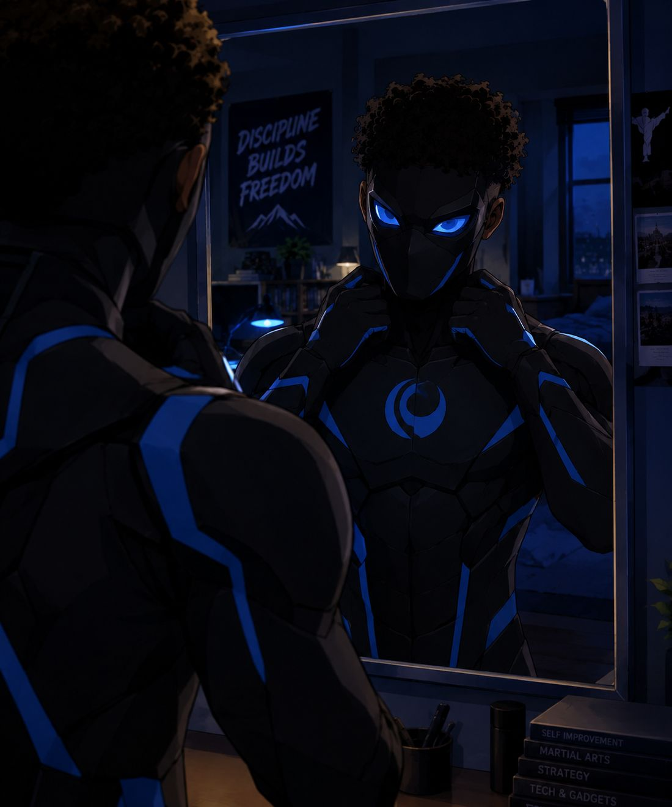
He flexes his hands, then clears the space beside his bed and runs through a short sequence of defensive movements. Stance. Step. Turn. His body remembers before he does.
His eyes catch the martial arts medals on the wall. They catch the light right back.
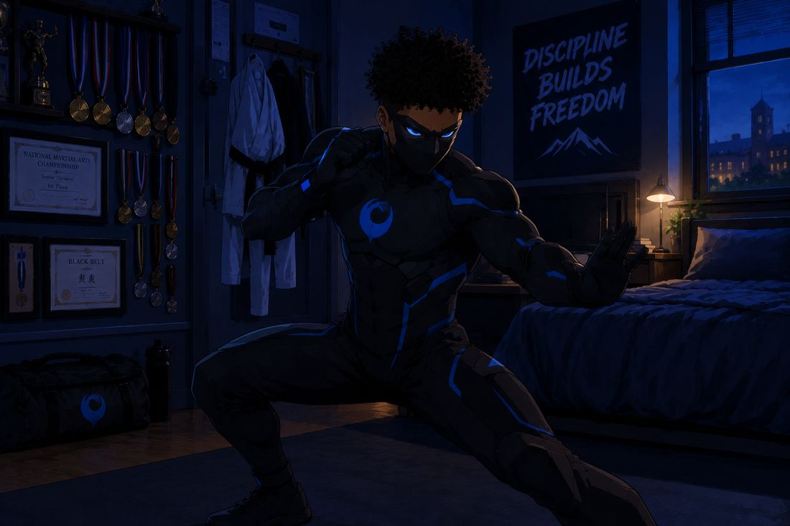
“All right,” he says.
He takes a breath, switches off the bedroom light, and leaves through the house without drawing a single glance.
Chapter 2
Blackthorne City, Night
The city is alive with late traffic, shop lights, and the low hum of the industrial roads. Wandile keeps to the quieter streets, stays in public view, and watches the time.
He doesn’t have to wait long. A Meridian-branded truck pulls out of a distribution site with a second vehicle close behind it.
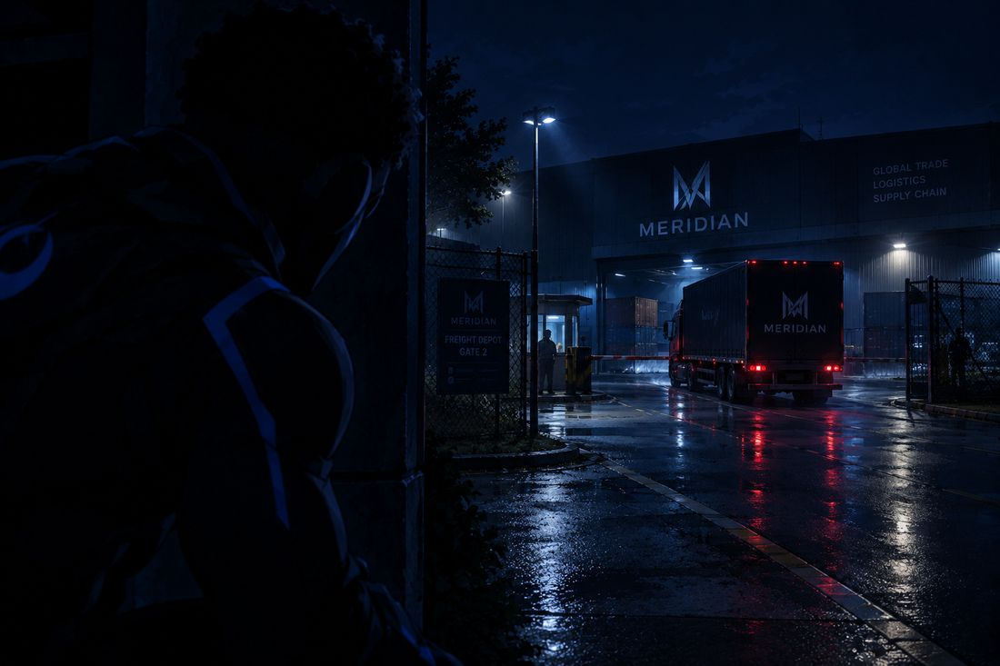
He doesn’t approach the drivers. He doesn’t go anywhere near them. He records the truck’s identifying details and watches which way it turns.
“One truck,” he says quietly. “One route. Let’s see where you’re going.”
He follows without rushing, noting each major turn and landmark. On his phone map, the route grows one pin at a time, a thin line of bright blue creeping across the dark streets.
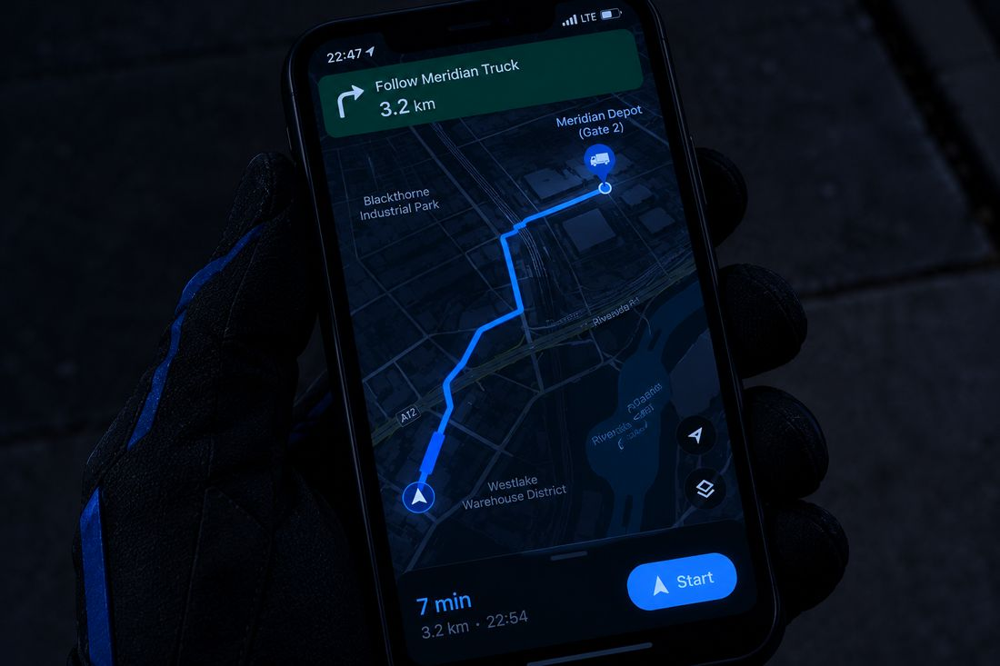
The truck leaves the brighter roads and heads into a warehouse district. Wandile stops at a public vantage point and watches the vehicle roll through the gates of a fenced industrial property.
The sign by the gate reads MERIDIAN: FREIGHT DEPOT, GATE 2.
The paperwork says Orion. The signs say Meridian. Wandile is starting to suspect they are the same thing wearing different jackets.
Chapter 3
The Warehouse District
The truck passes through the entrance. A few minutes later, the second vehicle arrives. Workers unload sealed crates and carry them inside, one after another, with the calm efficiency of people doing a normal job. Or people doing a very practiced one.
From where he stands, Wandile can’t see what is in the crates.
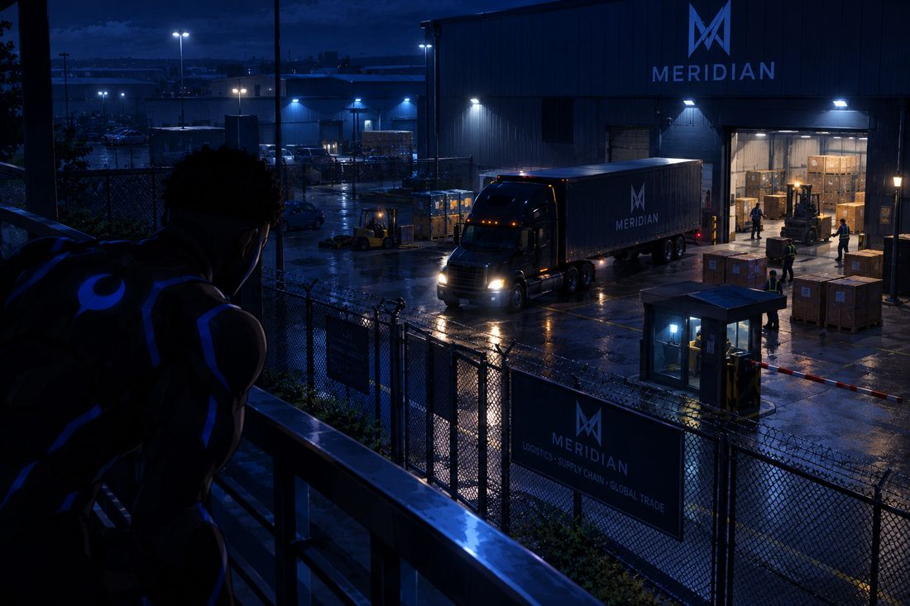
He lifts the compact camera and documents the visible activity along with the time. He is careful with himself here. Sealed crates are a fact. What is inside them is a theory. He photographs the fact.
“I need the paperwork,” he breathes. “A truck and a few boxes don’t tell me what’s inside.”
A security light sweeps across the neighbouring buildings. Wandile steps back into the shadows of a public walkway, staying well outside the fence.
A guard stops near the gate and looks toward the street.
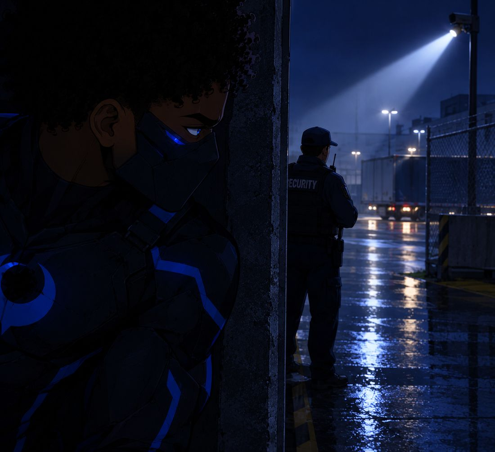
Wandile doesn’t move. He breathes the way his instructor taught him, slowly and evenly, until the stillness stops feeling like effort. The guard’s gaze passes over the walkway, hesitates, and drifts away.
He checks the time. The truck’s route and the depot’s address are useful, but there is no safe way to learn more tonight.
“That’s enough,” he whispers. “I’m not going in there blind.”
Somewhere in his head, an old instructor nods. Understand it first.
Chapter 4
The Complication
He heads back toward a better-lit street and realises the way he came is busier than he expected. A delivery vehicle blocks part of the pavement and forces him to change direction.
He steps aside, and his foot finds loose gravel. His balance goes, and he catches himself against a wall with a scrape that sounds much louder than it is.
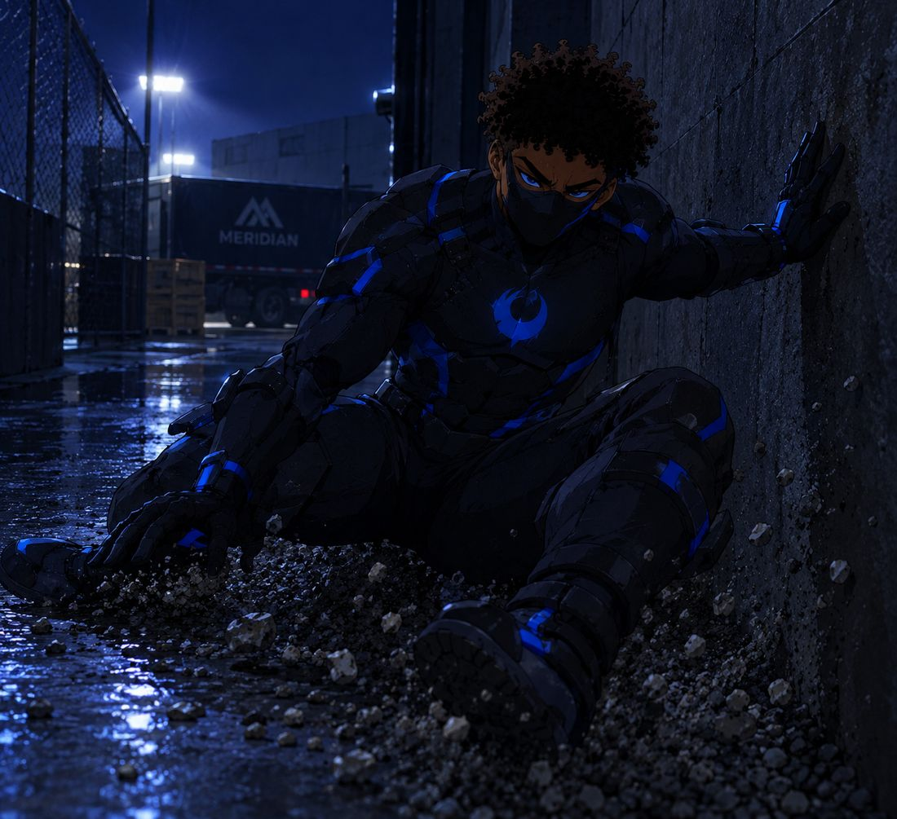
Nothing serious. It still rattles him. The suit offers some protection, but it can’t make him invulnerable. Luck is not a skill, he reminds himself, and tonight he has used a little more of it than he planned.
Far behind him, a voice calls from the depot entrance.
He doesn’t wait to find out whether the voice is meant for him. He moves away calmly and slips into the ordinary flow of people on the main road. Calm, he is learning, looks a lot like boring. And boring is nearly invisible.
He finds a quiet place to review his notes. The camera holds the evidence he captured: the Meridian truck, its route, the depot entrance, a timestamp. It is a neat little collection. Nothing in it proves the cargo is illegal.
“I have a location,” he says. “I don’t have an answer.”
He looks at the small camera and the phone in his hand. They are enough to start. They are not enough to keep doing this safely.
Chapter 5
The First Return
Back at his house, Wandile slips in quietly and returns to his bedroom. He takes off the mask and the gloves, then sits on the edge of the bed and lets the adrenaline drain out of him, one slow breath at a time.
He reviews the images and writes down only what he can verify: the time the truck left, the route, the depot’s address, and what he actually saw. Then he makes a second list for everything he doesn’t know, and he keeps it strictly separate.
He looks around his room. The desk is already crowded with coursework and research papers. His friends drop by often, and Ethan has a habit of opening things. Ethan once opened his fridge looking for a snack and his wardrobe looking for a charger. Ethan opens everything.
A mask, a suit, and a wall of investigation materials cannot just be left lying around.
“I can’t keep doing this from my bedroom,” he says.
He studies a rough sketch of his house layout and begins a fresh page titled Equipment / Secure Workspace. Underneath, he writes: privacy, storage, evidence, communications, first aid.
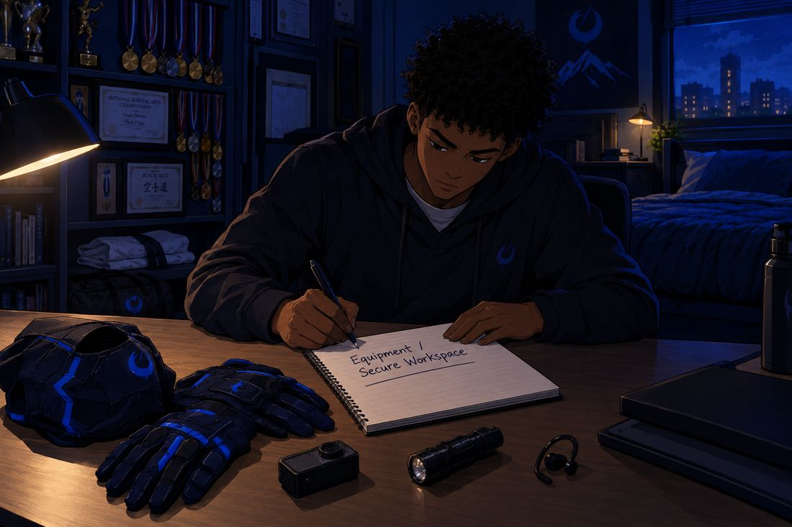
He hasn’t built a base. He has only worked out why he needs one.
Chapter 6
The Name
Wandile hangs the suit out of sight and puts the small tools away. Then he sits at his laptop and moves the night’s notes into a private folder.
On the screen, a blank document waits for a title.
He types: ECLIPSE — FIELD NOTES.
He stares at the word for a long beat. He has never quite explained it to himself. Now, looking at it, he thinks he can. In an eclipse, something steps in front of the sun, and for a few minutes the glare disappears. And in that strange dark, you can finally see what the brightness was hiding.
Meridian sells A Brighter Tomorrow. Maybe this city needs something that stands in front of the glare.
He saves the document.
Then he opens a new page for the next step: a secure place to work, and equipment designed around the way he actually operates.
Outside, the city glows beneath the night sky. By day, Wandile is still an ordinary college student. Tonight, for the first time, he chose to be something more.
Final Page
Meridian
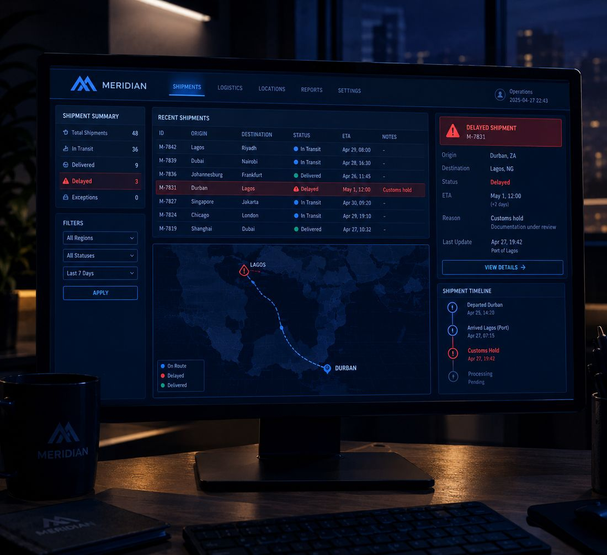
Inside a Meridian office, a routine shipment summary appears on a monitor, tucked between other logistics reports. An employee notices one delayed shipment, flagged in red, and logs it for the morning operations team. It is the kind of thing that happens every week.
There is no image of Eclipse. There is no mention of Wandile. There is no special order from Adrian.
The organisation carries on with its work, unaware of who watched the truck.
END OF PART 5